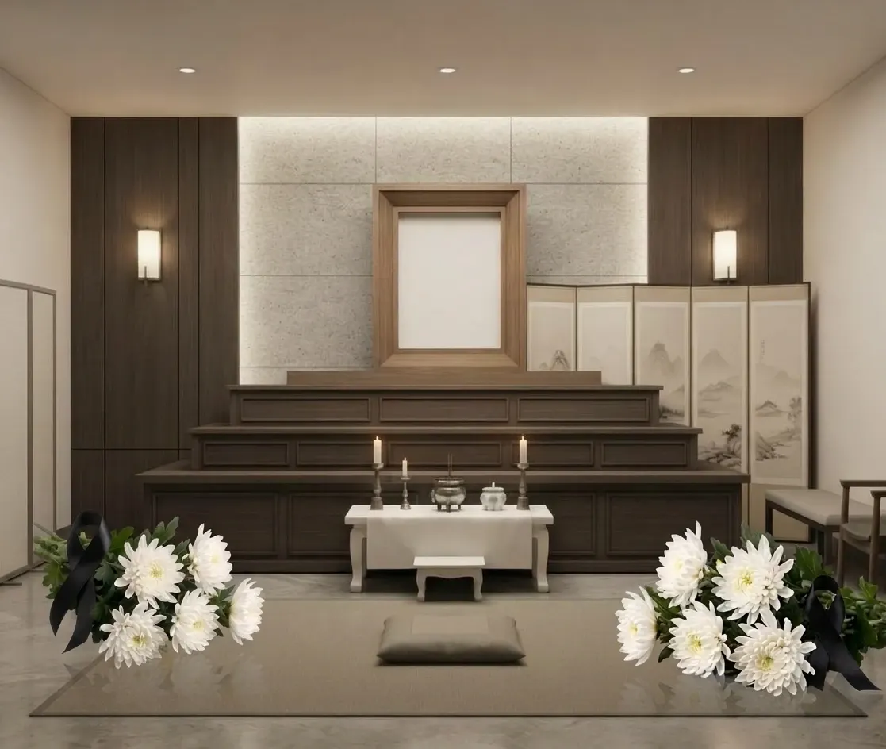
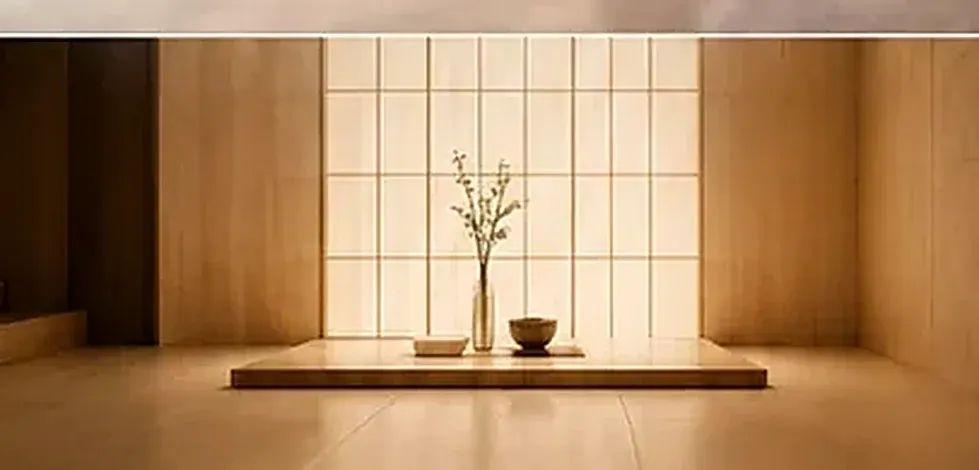
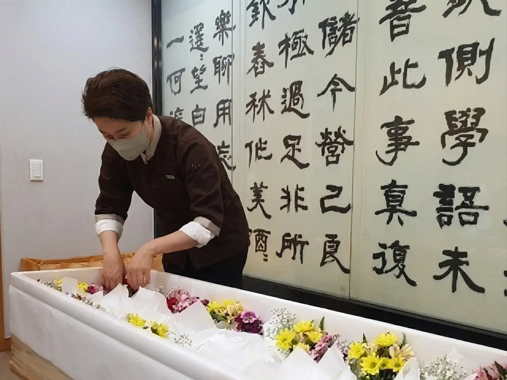
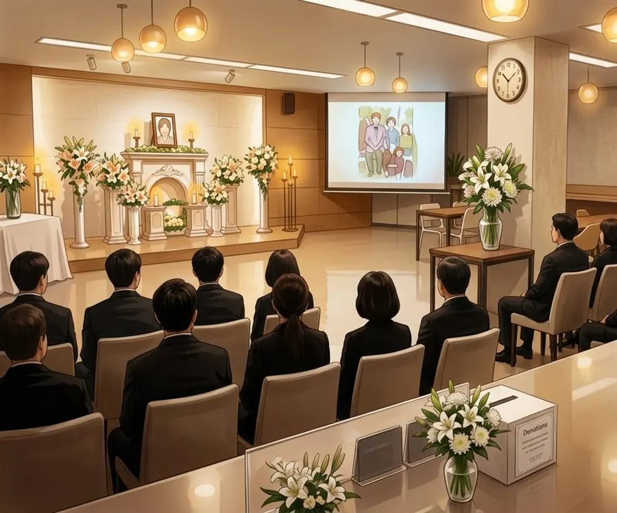
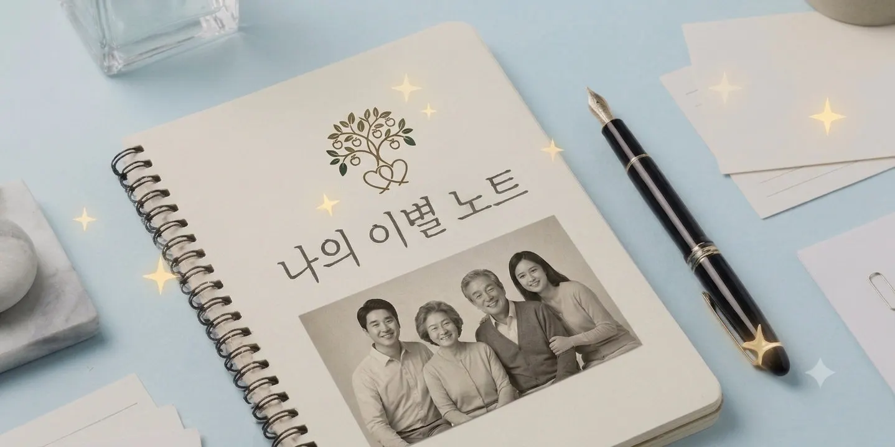
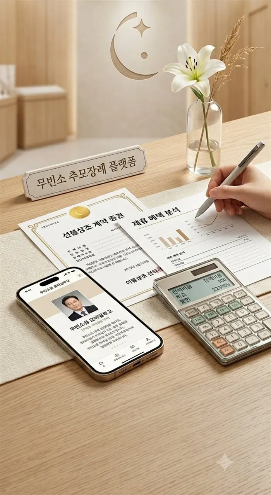

장례는 간소하게
추모는 깊이있게

01 · 무빈소 장례 안내무빈소 장례는 간소한
장례의 새로운 선택입니다.
입관·발인 등 절차는 그대로 진행하되, 빈소를 차리지 않고 조문객을 받지 않는 간소한 장례 방식입니다.
우리 지역 무빈소
장례식장을 한눈에
무빈소 이용조건과 시설·서비스·가격·제휴 혜택을 한눈에 보여드립니다.

03 · 무빈소 장례서비스상조 없이 준비하는
무빈소 전문 장례서비스
무빈소 장례만 전문으로 진행하는 이별예식장이 직접 제공하는 장례서비스를 맞춤 설계하여 이용할 수 있습니다.

04 · 이별 추모식'빈소 없는' 장례의
'빈 자리'를 채워드립니다.
영상과 음악, 편지와 이야기로 고인의 삶을 기억하고 마음을 나누는 시간을 함께 합니다.
무빈소 장례와 '함께 하는' 추모식
가까운 사람들과 '함께 하는' 추모식
진정한 추모와 위로가 '함께 하는' 추모식
이별 추모식은 무빈소 장례서비스와 별개의 서비스로 가족이 원할 때 선택할 수 있습니다.

05 · 나의 이별 노트내가 원하는 장례와 이별,
미리 가족에게 남겨보세요.
장례방식과 장지, 추모식에서 듣고 싶은 음악과 이야기, 가족에게 남기는 말까지 기록하고 보관합니다.

06 · 고객 지원 부가서비스'이별예식장'만의
무빈소 고객 서비스
새롭고 다양한 서비스 콘텐츠를 제공하고 있습니다.
무빈소로 장례가 진행됨을 알리고, 필요한 안내사항과 추모식이 있는 경우 일정 등을 담은 정형화된 모바일 부고장을 제공해 드립니다.
가입한 선불상조 계약의 유지·해약 조건을 확인하고, 장례식장 직접 서비스 이용과 비교할 수 있도록 돕습니다.
사진 10장과 이야기로 만드는 나만의 인생 자서전. 완성 후에는 추모식 상영 콘텐츠로도 이어갈 수 있도록 준비하고 있습니다.
무빈소장례의 선택과 준비를 돕고,
간소해진 장례에 의미 있는 추모식을 더합니다.
무빈소 장례식장 찾기부터 무빈소 장례서비스, 나의 이별 노트, 추모식까지 함께합니다.